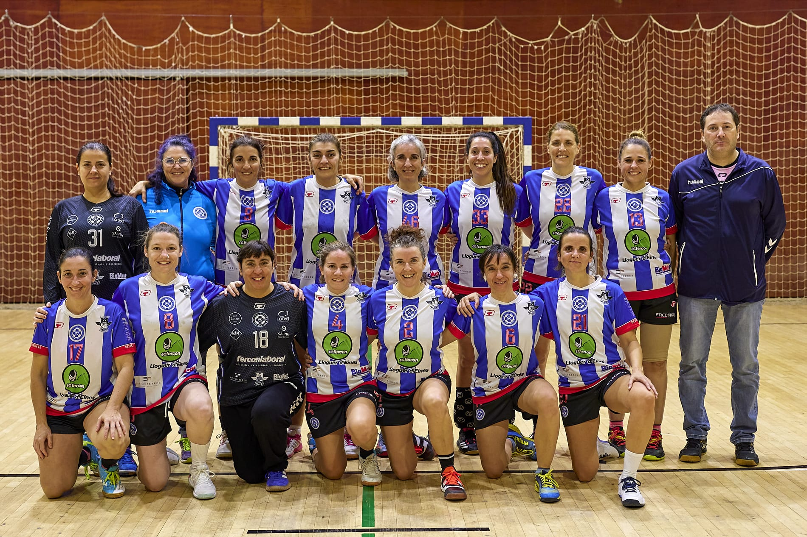

The team was born in 2022, with the support of a great club, and the best coach we could have, from the
union of some players still active and eager to compete in other areas, and some already retired but eager
to feel handball run through their veins again.
It will already be our third European event to which we are very excited and will fully enjoy it both on and
off the track.
We know of the great enthusiasm and effort that our Sevillian friends have put into the organization
of this great event and we are sure that it will be, once again, a great experience.

Our team is based on friendship.
We are friends - ex-handball players and we really love this beautiful game.
The team consists of players coming from different cities in Slovakia. It begun here with an idea to make
the team that will be able to play on some level, hopefully quite high level
and to be able to compare ourselves with other teams from Slovakia and also from the Europe.
Last year in European Masters Handball in Parades/Porto we finished at the 4. place in the category 33+
competition.
Ladies and gentlemen, get ready to meet a team that shows that in handball, as in life, experience is a
degree (and cold beer, a great incentive). Since 2018, the guys from CD Másters Balonmano Almería have shown
that passion for the sport has no age... but it is a good excuse to travel, sweat a little and celebrate a
lot.
Arriving from different lands in the sunny province of Almería, this group of brave people decided to join
forces, leaving speed and youthful reflexes aside to concentrate on what is important: enjoying handball
(and what comes after the game). What better way to keep sporting passion alive than turning each
championship into an adventure among friends?
Now heading to the European Championship:
With luggage full of hope, knee pads (just in case) and some ibuprofen, we headed out to conquer Europe. But
don't worry, our priorities are clear:
1. Make friends in every game.
2. Compete as if we were young (and survive as veterans).
3. Leave a good taste in your mouth... and bring good stories to tell in Almería!
In short, the CD Masters Balonmano Almería are more than a team: we are a family, a group of dreamers and,
above all, a group of friends who never miss an opportunity to show that handball and fun do not understand
age. See you on the court (or in the third period)!

Most of us had played together when we were young and we have met again over the years thanks to the
team.
The team was formed in 2021.
This is the fourth season that we participate in the Master League of the Catalan Handball Federation.
Last year we finished second in the league, out of a total of 11 teams.
In 2022 we went to the tournament organized by Asab in Seville.
In 1981, a group of friends from Banyoles founded the Banyoles Handbol Club, and in the absence of a
pavilion they also built the playing court in the courtyard of the city institute.
40 years later, in 2021, the Masters team was formed for the first time to be able to continue enjoying
handball, with players from the club's entire life but also bringing together people from other clubs in
Girona where that Masters team did not exist.
In its first participation in the Catalan Masters League, the team won the title.
Granada Veterans began in February 2018. Where a group of former players had the concern and the need to
enjoy this wonderful sport again.
During this year we participated in different tournaments, and we recruited players and former players who
joined to be part of our project.
In 2019 we held our first veterans tournament where we had a good response and the call was very successful.
In 2020 we created the veterans' league in which we participate to this day, in the Andalusian Federation.
Our philosophy: "we all play" reinforces friendship and camaraderie and makes them become unbreakable
values.
For us, a fundamental pillar is family, since our children, partners and husbands accompany and support us
at all times.
Veteranas de Granada continues to add new players permanently, which allows us to enrich ourselves and
continue enjoying handball every day.

The Granada Veterans Handball Club began its journey in 2016 as an initiative of a group of fans of this
sport with the idea of remembering ancient times and promoting the practice of Handball in its Veteran
modality.
Granada is a province with a long handball tradition, which caused former colleagues from various clubs in
the province of Granada to quickly join.
With the passion for this sport as our standard and with a third time always up to par, we try to leave our
stamp in each of the tournaments we participate in.
After our time in several international tournaments such as EMG Turin 2019, EMG Tampere 2023 and Porto 2024
in which we won the European Championship (+50), we headed to Seville with the hope of participating and
with the conviction that the friends of Seville will make us have a very, very good time.
1, 2, 3 Grana!!!

We are a Catalan team from a small town near Barcelona (La Roca del Vallès), which just last year we
celebrated 10 years in the master category ü•≥1Ô∏è‚É£0Ô∏è‚É£üéâ
This season we have been lucky enough to incorporate new teammates who have joined the first team both on
and off the track (we have some pending review of plays, yes) and who, when proposing to play our first
Masters Tournament, have been the first to pull the wagon, thank you girls! üíúüíú
As the category implies, we juggle to combine agendas and find space to enjoy this sport that we are all so
passionate about, and we are tremendously excited to be with you in Seville!
This year we are launching a mascot with a casual resemblance üòúü§£ that we hope will arrive at the end of
the season and take us there!
The idea was to create a space where players, who were no longer competing at the federated level, could
continue enjoying handball, maintain their physical fitness and, above all, strengthen bonds of friendship.
The adventures of the Veterans section began in March 2010 when a series of friendlies were scheduled by
fifteen former players of the club, thanks to the announcement by the Galician Federation of the possibility
of creating the Galician Championship through the concentration sector system.
The first result was a 23-19 victory against Balonmán Ourense de Veteranos.
As the years passed, the team gained experience in competing in concentration tournaments, becoming a
benchmark when it came to receiving invitations from other Galician, Asturian and Portuguese teams to
participate in tournaments in their towns.
In 2012, the team achieved its first sporting success by winning the Castrillón tournament in Asturias,
which would be followed by others in Lugo or Bueu and podium positions in Corvera or Ourense.
The arrival of the pandemic truncated the stability that was achieved over time and at the moment the
competitive level of the team is being resumed (the fun was never lost) achieving, in recent seasons, once
again, podium positions in Ribadavia.
The players and former players are part of the different generations of youth players who have passed
through the Club and the veterans include in our team, for the dispute of this tournament, all the former
players who cannot form their own team and want to enjoy the event... Fura Lalín!
MAFC is the association of the Budapest University of Technology, and the oldest sports association in
Hungary. The 45+ and 55+ senior teams belong to the handball department, where a total of 10 teams work,
from 12 years old to senior.
Our senior team mainly competes in senior tournaments, but we also play among younger players in the
Budapest championship. The department has about 120 players, of which 25 are seniors. Many of us have known
each other since childhood, because many of us played together or against each other 50 years ago.
The handball masters (veteran athletes) movement in Ukraine has a rich history and
remarkable achievements. Today, its most prominent representative is the Handball
Masters Team "Odesa", whose motto is: Game not over!
The team consists of athletes aged 55+, most of whom were former players of the
professional handball team SKA-Odesa. Today, they represent various
professions—teachers, scientists, law enforcement officers, managers, and
dockworkers-mechanics.
The founder and active player of the team is Serhiy
Hrynevetskyi, Head of the Odesa Regional Handball Federation and an Honorary
Citizen of Odesa and the Odesa Region.
During Russia's full-scale invasion of Ukraine, the team and its players
actively engaged in volunteer activities to support the Armed Forces of Ukraine.
Despite their prestigious status and age, the players remain constantly active,
maintaining their training process and achieving new sporting results.
For the past 10 years, theteam has been a regular finalist in the European Handball Masters
Championships:
 2015 - Third European Masters Games (Nice, France) - Silver
 2016 - European Handball Masters Championship (Poreč, Croatia) - Gold
 2017 - European Handball Masters Championship (Porto, Portugal) - Gold
 2018 - European Handball Masters Championship (Innsbruck, Austria) - Gold
 2019 - Fourth European Masters Games (Turin, Italy) - Gold
 2022 - European Handball Masters Championship (Granollers, Spain) - Gold
 2023 - European Handball Masters Championship (Tampere, Finland) - Bronze
 2024 - European Handball Masters Championship (Paredes, Portugal) - Gold
The team's goalkeepers, Adil Ozenbishli and Oleh Perekrestov, have repeatedly been
recognized as the best goalkeepers in European championships.

We are Scandi Stars, former team FIF/HØJ.
This is the 3rd time we have participated in the EHF masters. The first time was in 2023 when we won and
last year we came 3rd.
We changed the name to Scandi Stars because we had both danish, swedish and Norwegian players on the team we
are looking forward to participate again.
Some of us goes back to when we played handball as children, and have known eachother for 20 + years. almost
every one did Play professional, and we playes against eachother on different teams as well.
Now we Are old and we Play for the magic of handball and friendship . A lot of us are mothers, and last year
one of the players took along her husband and 11 weeks Young baby boy! for the love of the sport is
important for us.
The team was created 30 years ago in Silesia, Poland with sole purpose to play in National championship
aswell as playing in European Masters which we participate in since the begginings in Wien.